Touchless instrument, trusted software.
SUMMARY
Designing the software for an instrument you play without touching it
Quray turns hand movement into MIDI and CV control for synths and modular gear. As the sole product designer, I defined how the web configurator and physical device work together: from product architecture to a working coded prototype.
My role
Sole product designer
Team
Founder · Developer · Me
Timeline
2025 — ongoing
Product stage
-
Research
-
System design
-
Prototype testing
-
Backend + device testing — not started
- Modular synth forums, competitor teardowns, and musicians who had been burned by hardware companies that disappeared.
- Nine specs, each with the same four tables: what the interface does, what the system does, what happens when it fails, what is still open.
- One test screen split into a Library, an Editor and a Device page, each answering a different question.
- What lives in the browser, what lives on the instrument, and what happens when the two disagree.
- How the configurator, device screen, physical controls and instrument behaviour work as one product.
- Working prototype built with React, TypeScript and Tailwind in Cursor. Sync states, undo and zone editing behave the way they will in the product.
- Tokens in one file, and a live styleguide route that imports the actual components, so it cannot drift from the product.
Working prototype built with React, TypeScript and Tailwind in Cursor Open the prototype →
Pre-launch product impact*
* No post-launch metrics yet. The product is still in testing.
Turned a sensor test screen into a product system
One developer screen became a Library, Editor and Device area, with 9 flow specs for sync failures, recovery and memory limits.
Made an invisible instrument understandable
Live hand feedback, spatial zones and real-world coordinates show what the device sees and what each movement controls.
Protected tonight's show from tomorrow's edits
Library and device versions can intentionally differ, so future changes do not overwrite a setup already trusted on stage.
PROBLEM
Built to test sensors, not support musicians
PROBLEM
Built to test sensors, not support musicians
The problem was not to make the configurator look better. The real task was to rebuild the product model behind it: turning a sensor test tool into a system musicians could use to create, organise and load presets onto the instrument.
There is nothing to look at where the music happens. The active field is a volume of air above the device, and zones have no physical edges. Each zone can trigger a note, control a parameter, or send a CV signal, but the user cannot see where the field starts, where one zone ends, or whether their hand is in the right place. The interface had to show the field geometry before asking anyone to configure it.
Quray is a controller, not a synthesizer. It only produces control signals, so the user has to connect external gear and configure the mappings before anything can be heard. That makes the first-use problem harder: silence can mean four different things, and the user has no way to tell which. Nothing connected, wrong mapping, dead synth, lost tracking — all of them sound identical. The software had to show cause and effect on screen instead.
Before Quray can feel playable, the user has to build a mental model: presets contain zones, zones have mappings, mappings route to Note, MIDI, or CV, everything has a save state, and the device has its own memory that does not automatically match the browser. None of this can be hidden, because this audience needs to see and control the full structure. It had to stay visible and inspectable without looking like a settings dump.
The configurator is one half of the product. The other half is a device with three buttons and a monochrome screen 128 pixels wide, and I own that surface too. What a musician can read there mid-performance, and what the buttons do when there is no computer nearby, is a separate design problem in very little space.
The hardware had been shown at Superbooth Berlin and was impressive enough to get attention. But the software had not caught up with the instrument yet.
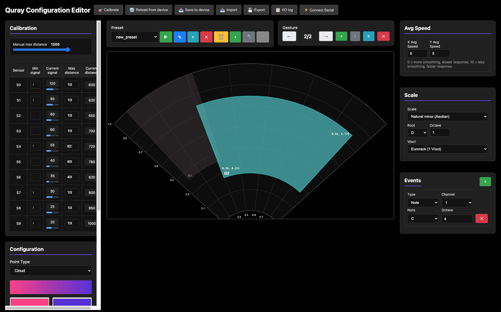
The original configurator, built to test the sensors.
-
1
No hierarchy. Sensor calibration and musical settings carry the same visual weight, so nothing tells you where to start.
-
2
No library. Presets live in a dropdown, with no way to browse, name or organise what you built.
-
3
Save and sync are one action. "Save to device" gives no model of what is saved where.
-
4
No preset overview. Zones appear one at a time as "Gesture 2 / 2", paged through with arrows.
-
5
Preset and zone settings sit side by side with nothing marking which is which.
-
6
Everything is an "Event". Notes, MIDI and CV are mixed into one generic list, so a modular user has no obvious place to start.
-
7
The invisible field stays invisible. Position is shown as coordinates between 0 and 1, with no live hand feedback.
-
8
The instrument is a black box. The top bar talks to the device, but nothing ever shows what is stored on it.
* The fan canvas was right, and it stayed.
PRODUCT RESEARCH
From interface problems to product direction
The interface problems were visible. The product decisions behind them were not. I needed enough context to understand the domain, define the audience, and design for trust.
-
01
Understand the domain
- Music theory
- Modular synthesis
- MIDI and CV
- Hardware constraints
-
02
Define the core audience
- Who needs it most
- What they already use
- Why they would adopt it
- What belongs in the MVP
-
03
Learn what earns trust
- Competitor failures
- Setup friction
- Live reliability
- Long-term support
Direct access to target users was limited, so I combined conversations, first-use observations, forum patterns, and competitor evidence. None was enough alone. Together, they gave me a direction.
Conversations with musicians
Finding people to test with was harder than expected. Some sessions were in person, some online, and the modular players I most needed were in another country, so the team ran those and brought the feedback back.
6 interviews by me + wider feedback collected by the team
Losing work is the fear underneath everything.
Trusting the device on stage was the hard part.
No single interface could serve all the groups at once.
Every conversation reached the same place: a preset that will not be there when it is needed. Not a feature request, a condition of trust.
What is actually on the device right now, what happens if a setting is wrong, what happens if something has to be fixed ten minutes before a show.
People do not want to configure much. But a configurator that is hard enough to avoid turns an instrument into what this community already calls an expensive preset machine.
Modular players are not afraid of complexity; digging through a system is the point for them. Experimental electronic musicians want freedom instead: draw zones anywhere, as many as they like, overlap them. The editor had to serve both without splitting into modes.
Musicians producing on a computer are a much larger segment and there is real interest there, but Quray has no integration with that workflow and none is planned. I argued for it and did not convince the team. It is written down as a risk rather than settled.
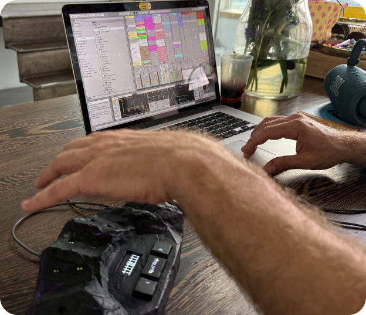
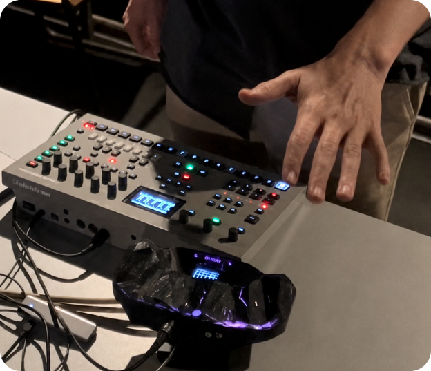
Testing the original configurator with musicians, each on their own setup.
People meeting the instrument for the first time
The team showed Quray at Superbooth Berlin. I could not travel with them, so they spent the show watching people try it and I collected what they saw.
3 exhibition days · dozens of first-time interactions
The hardware convinced people, the software lost them.
Almost everyone asked if it just came with presets.
The price stopped a lot of visitors, but not the modular players.
Reactions to the instrument were immediate and physical. Then the team offered to let them build their own preset, they saw the configurator, and backed out. The phrase that kept coming back was: just set it up for me.
Where the field starts, where their hand is inside it, which zone is which. The old interface showed none of it, so the thing people had just enjoyed playing became abstract the moment they looked at a screen.
What is on the device, and whether anything drifts during a performance. Performers asked specific versions of it: what happens between one preset and the next, is the transition smooth, does a note hang if a hand is still over the instrument when it switches.
Not to configure on it, but to fix one thing quickly before going on. That is why mobile stayed on the list even after it was cut from the first release.
$650 stopped a lot of visitors. It did not register at all with modular players, who spend that on a single module without thinking about it.
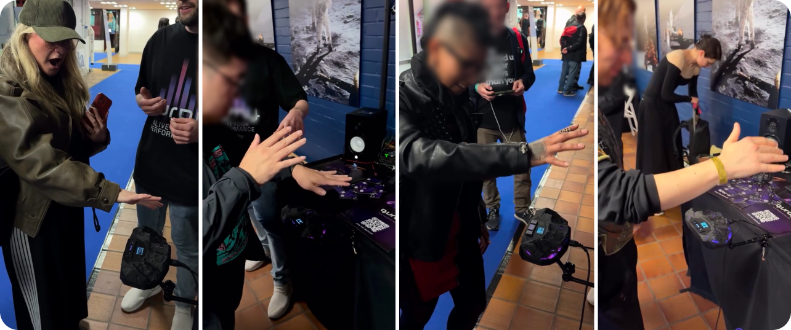
Visitors playing Quray for the first time at Superbooth Berlin.
Forum research
ModWiggler, Elektronauts, Reddit. One complaint is an anecdote. The same complaint across dozens of threads is a pattern.
I started with the instruments in this category, noticed that the real discussion about them happens on forums rather than in reviews, worked out which forums this audience actually uses, and then read the threads myself. AI helped me find where to look and handle volume, but every claim went back to the source before I used it: one generated report invented a competitor product that does not exist. After that, nothing informed a decision until I had seen the primary thread.
The single most repeated complaint in the category. You pick your synth and pick the parameter by name; the number stays underneath for people who want it.
Nobody wants to sign up before hearing a sound. But the same people are terrified of losing work, and that is exactly what an account protects. So authorisation had to exist and had to stay out of the way until it earns its place.
Almost every competitor ships desktop software, and almost every thread about that software complains about installing, updating and breaking it. A browser-based configurator removes a whole category of the complaints I was reading. It also has a limit I checked rather than assumed: Safari supports no Web MIDI at all, on either macOS or iOS, so the browser cannot be the only way a device is reached. Novation, Intech and Genki all ship web editors for their hardware and all of them ran into the same wall.
Both readings cost trust with an audience deciding whether a company is serious. That is a constraint, not a taste preference.
Competitor research
Of these eight, one company was liquidated, one discontinued its product, and one is in its second insolvency process. Enhancia was wound up in 2022, Sensel stopped making the Morph the same year and moved on, and ROLI entered administration in 2021 with a further notice filed in July 2026. This audience remembers.
-
Product
Status
Why it belongs in the research
-
Audima Sway
Direct competitor
Active
A desktop gesture MIDI controller with its own configurator, priced at $830 and sold direct in small batches rather than continuously. USB-C and a 3.5 mm MIDI Out, but no CV.
-
ROLI Airwave
Direct competitor
Active
Camera-based hand tracking above a ROLI keyboard, released in February 2025 at $299. Touchless and half the price, but MIDI only with no CV, dependent on a host keyboard and on a paid subscription for the software.
-
Leap Motion + GECO
Technical substitute
Active
Optical hand tracking combined with live MIDI and OSC mapping. Similar touchless interaction, but as a sensor-and-software stack rather than an integrated musical instrument.
-
Genki Wave
Adjacent competitor
Active
A wearable gesture controller at $349. CV and gate control require the separate Wavefront Eurorack module, sold on its own or bundled with the ring.
-
Enhancia Neova
Adjacent competitor
Liquidated
A wearable gesture MIDI controller. Enhancia was liquidated in 2022; its code and resources were released, but official maintenance ended.
-
Expressive E Osmose
Category / UX reference
Active
An expressive keyboard instrument rather than a direct competitor. Relevant for studying how powerful hardware depends on a deep sound engine and advanced configuration software.
-
ROLI Seaboard 2
Category reference
Financial distress
An expressive MPE controller supported by a substantial software ecosystem. The original ROLI entered administration in 2021; its successor continued selling Seaboard 2, but an investor filed a notice of intention to appoint administrators in July 2026. The outcome is not yet resolved.
-
Sensel Morph
UX reference
Discontinued
A pressure-sensitive touch controller with a strong overlay editor. Production and official support ended in 2022, making it relevant to both configurator design and long-term product trust.
"So how is this different from a theremin?"
Almost everyone I showed Quray to asked this within the first minute. A theremin makes its own sound and you shape it with two antennas. Quray makes no sound at all — it reads where your hands are and sends MIDI and CV to whatever you already own.
The question mattered more than the answer. A theremin is the reference this audience arrives with, so every explanation of Quray has to start by borrowing it and then correcting it.
RESEARCH OUTCOMES
What the research changed
The research narrowed the audience, reshaped the MVP, and changed the product architecture. Quray had to give modular and experimental musicians real control, reach a first playable result quickly, and make every saved, synced, and active state impossible to misread.
-
Trust had to be designed, not promised
This audience has been burned before: dead hardware, vanished companies, orphaned software.
-
The audience got narrower, on purpose
"Expressive, for everyone" narrowed to musicians who build their own setups — and one segment was cut entirely.
-
One editor for two opposite mindsets
Precise technical control for one group, free experimentation for the other.
-
Saving became silent, sync became loud
Saving happens automatically, without asking. What is loaded on the instrument is always visible, because that is the status a musician actually worries about.
-
Open a browser and hear a sound
Nothing to install. Connect your devices, open the browser, and a working preset plays before anything has to be configured.
-
Nothing should surprise you on stage
Every performance decision was designed to remove surprise: the musician always knows what is active, what comes next, and that nothing changes mid-moment.
COLLABORATION
A format that turned discussions into decisions
At this point the problem was no longer a lack of research. It was that discussions were not turning into decisions.
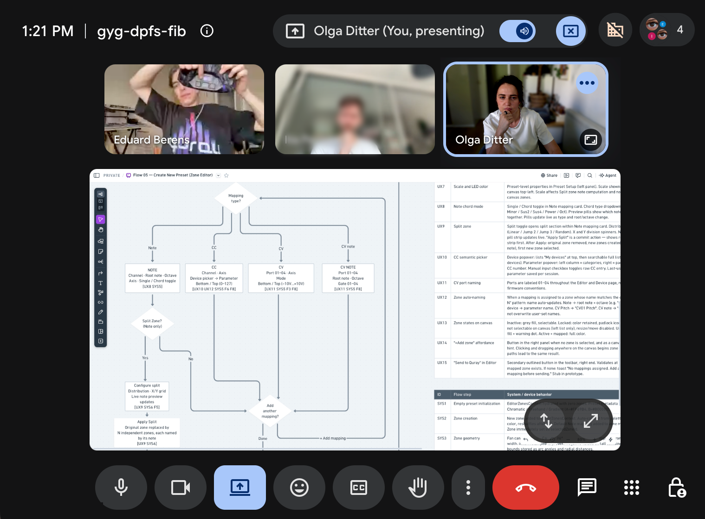
The team was small and asynchronous. Important context was scattered across messages, and broad product discussions rarely ended with a clear answer.
So instead of producing more research documents, I wrote flows: user steps, interface behaviour, system behaviour, failure states and open questions, all on one page.
It gave the team a shared reference. We stopped discussing the whole product at once and started solving one path at a time. That is when the project began moving.
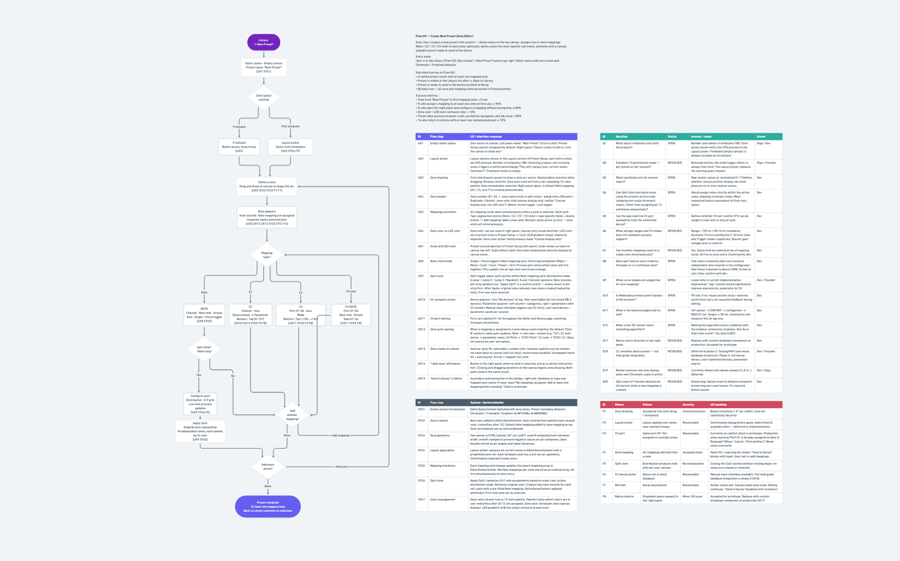
Flow 05 — creating a new preset. Open the full flow in Whimsical →
-
1
The flow itself. Every path a musician can take, including the ones that are not the happy one.
-
2
What the interface does. Each step paired with the on-screen response, so nothing is left to interpretation at build time.
-
3
What is still open. Every unresolved question carries a status and a named owner — dev, founder, or me. This is the table that made the format work.
-
4
What the system does. The same steps from the device side: what is stored, what is sent, what changes on the hardware.
-
5
What happens when it fails. Each failure classified as recoverable, silent, or accepted, with the handling written out.
ARCHITECTURE & PROTOTYPE
Designed by building it
After the research and the flow documents, the open question was no longer what to design but whether the model would actually hold. Few screens, a lot of states: three screens, and everything difficult living in the states between them. So I built a working prototype instead of drawing more of those states, and tested it against real interaction. What's still missing is the backend and the hardware connection, and that is the next round of testing.
3 key screens
Everything between them
The decision
Library
Editor
Device
+
Everything between them
=
The decision


A prototype in code
Static screens can show what a state looks like, not what it depends on. So I built the interface that actually behaves that way.
The system behind the prototype
The prototype was not a coded copy of finished screens. It became the place where I designed the product: architecture, interaction, components and visual rules evolving together in one working system. React 19, TypeScript, Vite and Tailwind v4 made behaviour testable, while shared tokens and reusable components kept the interface easy to change without drift.
-
01
One model from design to code
- Architecture mapped directly into routes
- Zone logic adapted from the developer’s code
- Decisions reviewed in the working interface
-
02
Change once, update everywhere
- Shared tokens for every visual role
- Reusable components across all screens
- A live styleguide using the same code
-
03
Real behaviour, clear boundaries
- Library, Editor and Device connected
- Undo, version history and modified states
- Real zone logic, ready for integration
Where is the Figma file?
There is no default workflow that fits every product. The useful level of fidelity is the one that exposes the real risk.
For Quray, static screens could define the visual language, but only a working interface could reveal whether the interaction model held together.
Left: Original configurator. Right: Editor screen redesign
Editor: drawing an instrument you cannot see
The Editor holds a hierarchy: a preset → the zones inside it → the mappings inside each zone. Each level needed its own place on screen and an obvious way to move between them. The field is invisible in the air; on screen it had to be as concrete as any other object you edit.
A prototype, not a mockup
Draw zones, change a mapping, sync it to the device, undo it, roll back to an earlier version. Everything responds the way it will in the product.
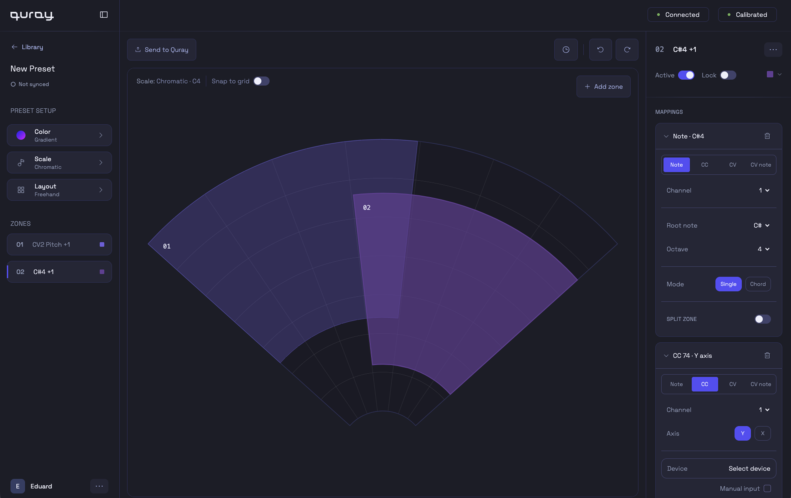
-
1
Preset properties, all in one place. Scale, root note and everything that belongs to the preset rather than to a single zone.
-
2
Layout presets, or freehand. Pick a ready layout that is guaranteed to sound musical, or draw as many zones as you want, anywhere. Two audiences, one editor.
-
3
All zones in one list. Every zone sits under the preset properties, for switching and orientation without hunting on the canvas.
-
4
Direct manipulation on the fan. Drag a zone, duplicate it, or copy it into another preset without leaving the canvas.
-
5
Version history with rollback. Every change is recorded, and any earlier state can be restored.
-
6
Everything about a zone in one panel. Tabs for Note, MIDI and CV, plus active and lock, so it is always obvious what a zone does and what will happen to it.
-
7
Split Zone. A zone can be divided into parts, so a single sweep of the hand plays a sequence of notes in tune.
-
8
"Filter Cutoff", not "CC74". Pick your synth, then the parameter by name. The number stays underneath.
Library and Device: what you own, and what is on the instrument
The library is ongoing work: everything a musician owns, in progress or finished. The device is tonight: a short, deliberate selection that has to survive a performance. Keeping them separate is what makes the sync model work.
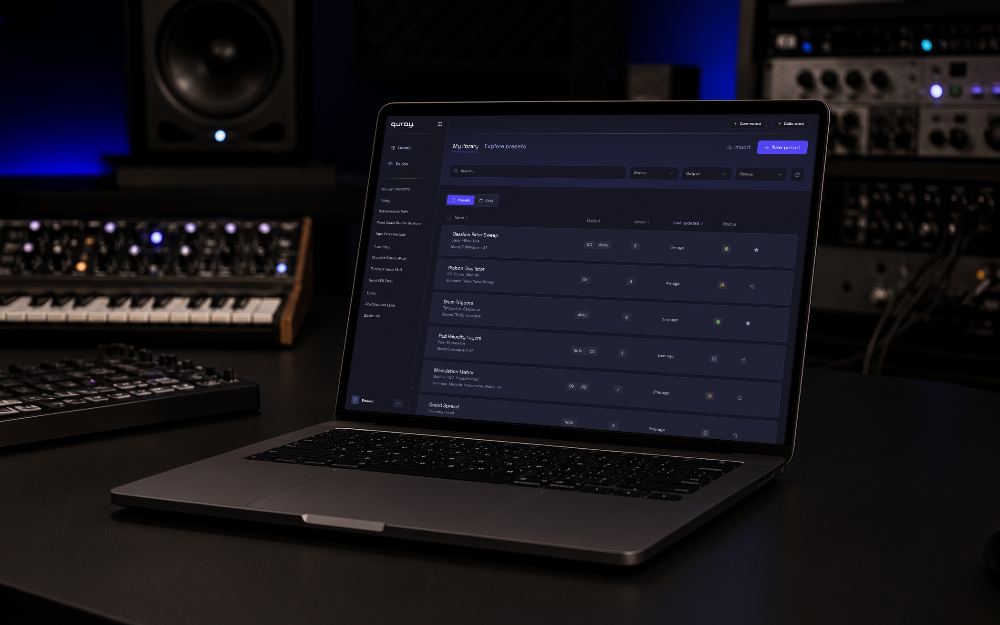
The library opens first, not the editor.
Most sessions are not about building something new. They are about finding what already works and getting it onto the instrument before the set starts.
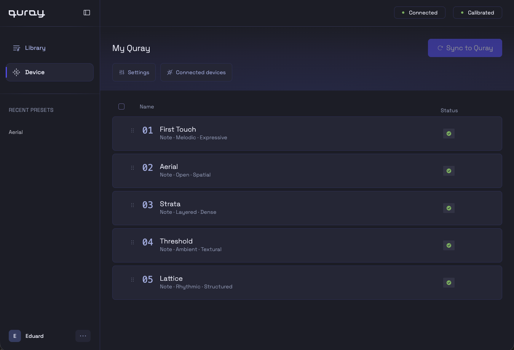
The same preset can sit on the device twice, on purpose.
Once on its own, once inside a loaded set. Every engineer's instinct is to forbid that, including mine at first.
Documentation that runs
This is the design system for Quray: a Storybook-style route inside the prototype that imports the real components and reads the real tokens, so there is no second copy to keep in sync. Most of it was generated from the Cursor rules I wrote, which is fast and also exactly why it needs curating, because generated documentation drifts toward completeness rather than usefulness.
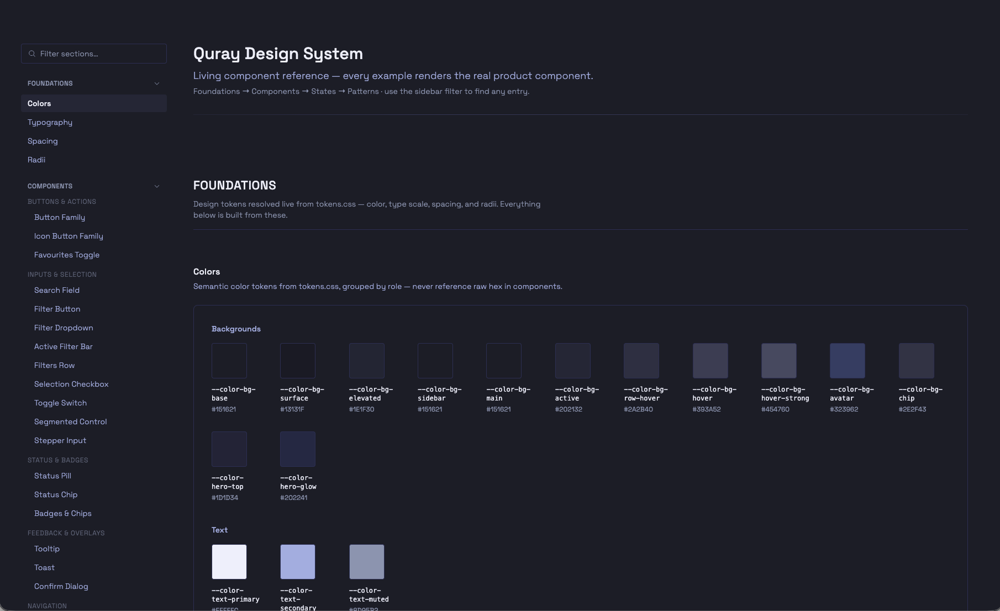
The styleguide as it stands today, still being cleaned up Open the styleguide →
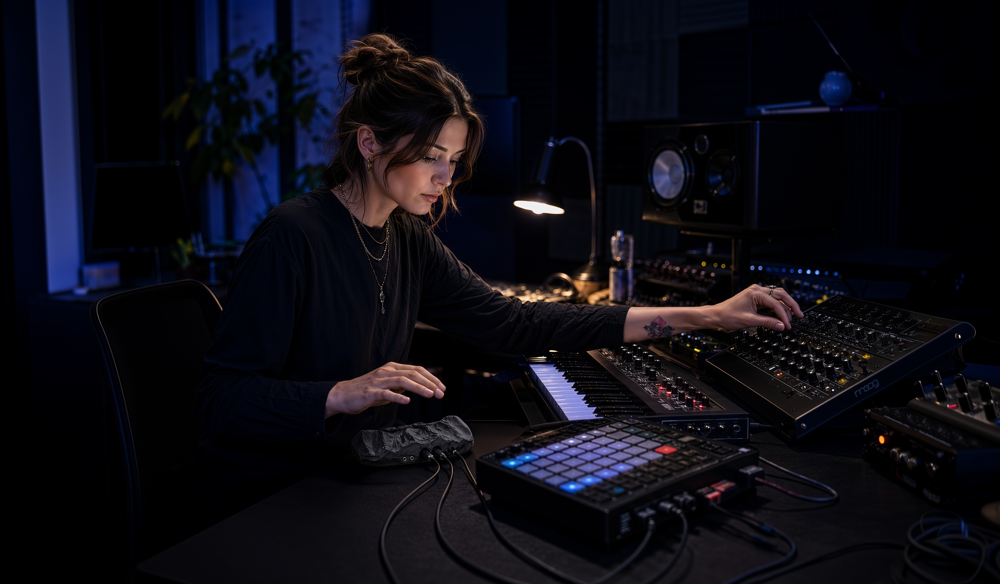
STATUS
Where the project stands
The first release has to work, because this audience does not give second chances. That constraint decided most of the scope. Some things were cut by the team, some after the research, and one I argued for and lost — the right column says which.
In the first release
Editor
Zones, mappings, states, undo and version history
Library
Your own presets alongside the founders' curated ones
Device page
Sets, standalone presets, memory, on-device switching
First session
Works without a manual, and before the hardware arrives
Authorisation
Present, but never blocking the first session
Design system
Tokens, components and a running styleguide
Cut or deferred
Mobile version
iOS browsers cannot reach MIDI hardware. Needs the backend
DAW integration
Team decision. I argued for it and logged it as a risk
Voice control
Team decision
Presets made with AI
An idea worth testing, not first-release work
Comparing presets
Two versions side by side. Architecture decided, ship date open
Community library
Sharing presets between users. Founder decision
Tested twice, for different reasons
Testing so far has been split by what was available at the time. The first round had a working device and the old configurator; the second has the new interface but no hardware.
-
First round
The device worked, the software did not
- Musicians on their own setups
- Hardware connected and playing
- Source of every problem above
-
Second round
The model, checked without hardware
- Is the preset model understood
- Library or device: where things live
- Sets, and when they matter
Not everything useful came from testing with musicians. I presented Quray and the prototype at two design meetups, on a big screen, to rooms of designers. Nothing in the product changed because of it — the value was in defending the work live, out loud, to people who ask hard questions.
Presenting Quray and the coded prototype at a Cursor and Mobbin design meetup.
Waiting on the backend
A modular synthesis school in Amsterdam and several electronic musicians are interested in testing once the backend is connected. That round covers what I could not test alone: a real preset, on a real device, in the room where it will be used.
Interface built
State logic works, nothing persists
Backend connection
In progress, with the developer
Testing with musicians
Lined up, no dates yet

REFLECTIONS
Notes from the middle
The project is not finished, so there are no launch metrics here and no field research yet. What it did give me was a reason to rebuild how I work: research, prototyping and documentation all moved into an AI-assisted process, and that turned out to demand more judgement rather than less. These are the notes I would keep.
Domain first, interface second
Until I understood why V/Oct, CV behaviour, sync state and preset switching matter to a musician, I could only make the configurator look cleaner. The interface became useful at the point where that knowledge started changing product logic rather than layout.
Hardware and software are one product
I have worked on hardware-software products before, and they behave differently from pure software. The same logic has to hold across the configurator, the device, a 128-pixel screen and a stage, and it cannot be validated in a browser alone. Testing means physical conditions: latency you can feel, calibration that drifts, a hand in the wrong place. That constraint is the part of this work I keep coming back to.
AI research needs a fact-checker, not a reader
It agrees with you. One research pass told me Quray had no real competitors; another invented a competitor that does not exist, described convincingly enough that I went looking for it. Forum quotes came back that I could not find, or that turned out to be about a different product, sometimes a different category of device altogether. Checking properly also cost me a positioning line: my own competitive analysis had recommended calling Quray the first touchless controller with CV outputs, and Moog shipped pitch, volume and gate CV on the Etherwave Plus in 2009. What is new here is the combination, not the category. Everything on this page that came through AI was checked against a source before it stayed.
Autonomy has to match verifiability
I gave a coding agent too much room early on. It rewrote around 800 lines without review, broke the routing and cost me half a day. After that it kept read-only access for analysis, and every edit went through a stricter setup: one change per prompt, exact strings rather than descriptions, an instruction to stop and ask rather than guess. The rule is not about AI specifically. Autonomy should extend exactly as far as my ability to verify the result.
The part I could not do yet
AI is useful for finding patterns and useless as a replacement for a room. The insights I trust most came from watching someone hesitate over a setting, not from a summary. This project has not had that yet in its current form, and it is the first thing happening once the backend is connected.
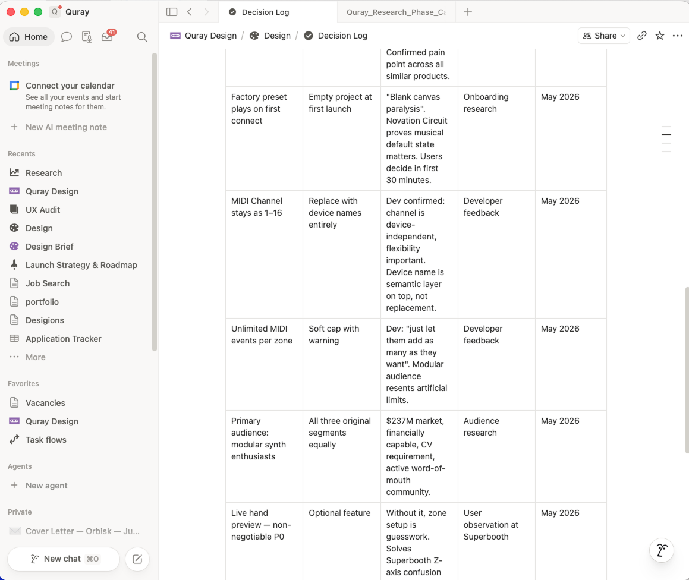
What I would do differently
I reconstructed too much reasoning after the fact. Decisions were made in calls and messages, and by the time I had to explain why the sync model looks the way it does, some of the arguments were rebuilt from memory. A decision log costs ten minutes a week and would have saved days.
I would also have wanted more than six interviews. This is a startup with a small team and no research budget, so the honest answer is that you work with what you can get and stay explicit about what you do not know.
Quray reminded me why I'm drawn to complex products. You cannot fix them from the surface. I like the point where the mess underneath starts to become a system someone else can actually use.